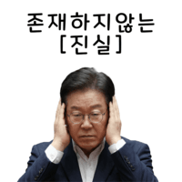

거기서라도 해서 적당히 먹고 빠지면 양반이지 토스만 봐도 하이닉스 평단 200후반대인 새끼 있음 더 망한놈은 거기서 레버리지 탄놈
↳ 답글 · ㅁㄴㄴㄴ · 11.26 19:21:47
개색히
↳ 답글 · ㅇㅇ · 11.26 20:31:30
잼파파 말만 믿고 9000에도 "지금이 최저점인거 인정?? 인~~즈어어엉??!! 1만 돌파 가즈아!!"
이러고 들어간 1찍 영포티들이 클리앙에만 한가득임
괜히 최대 손실 1위가 40대고 2위가 50대인게 아님
ㅇㅇ · 11.26 14:18:10
이재명 연임 못하면 어차피 재판 재개되고 대장동이랑 연기금 돈잔치한거 싸그리 엮어서 무조건 깜빵확정임
ㅇㅇ · 11.26 14:22:54
신나게 치적인양 나댄 결과
ㅇㅇ · 11.26 14:24:22
고점대비 약48% 하락 세계1위 위엄
대만의2배수준 하락 미국의 3배수준ㅋ
↳ 답글 · ㅇㅇ · 11.26 14:25:53
↳ 답글 · ㅇㅇ · 11.26 15:07:00
@ㅇㅇ(175.119) 앞으로 정치권이 국민연금에 개입하면 징역20년을 때려야한다.
그래서 이재명이 권력으로 아무리 재판취소해봤자. 국민연금 대규모손실, 부실ETF시행, 대장동 항소포기, 호남반도체 강압추진 등등 새로운 경제범죄때문에 감옥갈거라는 전망을 좌파쪽변호사가 예측하더라
이병철 변호사는 2026년 11월 8일 스레드(Threads)에 "이재명 기존의 5대 형사 재판보다 대통령 취임 이후 저지른 범죄가 10배 이상 죄질이 나쁘다 - 좌파 변호사 이병철"이라는 제목과 함께, 국민연금과 레버리지 ETF 동원 및 손실 등을 언급하며 경제 관련 범죄(사기·직권남용 등)를 주장하는 글이 올라왔습니다.
ㅇ · 11.26 14:27:21
딴데서 벌어온거 주식으로 다 까 먹었네 ㅋㅋㅋ
ㅇㅇ · 11.26 14:31:33
한국인 멸종 1타 강사 대재명
ㅇㅇ · 11.26 14:36:53
팩트는 저때 리벨 했음 현실 수익은 120조 가량 되고 국민은 줄초상 났을거고 지방선거 개쳐발렸을 거란 거임 자 이제 누가 똑똑한거냐?
↳ 답글 · ㅇㅇ · 11.26 14:40:03
아니야 리밸런싱했으면 외국인들이 안떠났을거란 전망이있다. 그리고 주가지수 적당히 올라서 개미들 피해도 적었겠지
국민연금이 원칙대로 리밸런싱(자산 재조정)을 시행했다면 상반기 외국인 순매도 규모가 100조 원 이상 줄었을 것이라는 예측은 영국계 투자은행 바클레이즈(Barclays)의 분석 등에서 제기됐음
당시 국민연금이 국내 주식 매도를 유예하고 목표 비중을 상향(14.9%→20.8%)하면서 증시가 과열(오버슈팅)되었고, 이것이 역설적으로 외국인 투자자들에게 높은 가격에 차익을 실현하고 떠날 수 있는 환경을 제공했다는 시각
↳ 답글 · ㅇㅇ · 11.26 14:52:33
@ㅇㅇ(175.119) 그건 결과론이고 그때 매수 주체가 개미밖에 없는데 헛소리 마라 찢당은 지들 이익위해 할 일을 했을 뿐
급등할때 팔아서 급등을 막고 급락할때 매수해서 급락을 막아야 하는데 이걸 안해서 미친듯이 급등했다 미친듯이 급락함
ㅇㅇ · 11.26 17:45:59
50년뒤) 100세부터 수령ㅋㅋ
ㅇㅇ · 11.26 18:10:29
imf때 백인님들이 개센징국 살려준게 공짜가 아니었음 그 댓가로 나라의 문이 화알짝 열리고 이번에 쭉쭉 뽑아먹힌거처럼 한국 주식시장은 백인님들한테 후장대주는 창남국으로 영원히 전락한게 댓가였음
ㅇㅇ · 11.26 18:10:39
연금 올해 수익 음전 직전이노 ㅋㅋㅋㅋㅋㅋㅋㅋㅋㅋㅋㅋ
ㅇㅇ · 11.26 18:28:13
대 황 찢
ㅇㅇ · 11.26 18:40:35
대한민국 국민들이 연금 받기 싫다고 스스로 뽑은 대통령인데 뭐가 문제임? ㅋㅋㅋㅋㅋㅋㅋㅋㅋㅋㅋㅋㅋㅋㅋㅋㅋㅋㅋㅋㅋㅋㅋㅋㅋㅋㅋㅋㅋㅋㅋㅋㅋㅋㅋㅋㅋㅋㅋㅋㅋㅋㅋㅋㅋㅋㅋㅋㅋㅋㅋㅋㅋㅋㅋㅋㅋㅋㅋㅋㅋㅋㅋㅋㅋㅋㅋㅋㅋㅋㅋㅋㅋㅋㅋㅋㅋㅋㅋㅋㅋㅋㅋㅋㅋㅋㅋㅋㅋㅋㅋㅋㅋㅋㅋㅋㅋㅋㅋㅋㅋㅋㅋㅋㅋㅋㅋㅋㅋㅋㅋㅋㅋㅋㅋㅋㅋㅋㅋㅋㅋㅋㅋㅋㅋㅋㅋㅋㅋㅋㅋㅋㅋㅋㅋㅋㅋㅋㅋㅋㅋㅋㅋㅋㅋㅋㅋㅋㅋㅋㅋㅋㅋㅋㅋㅋㅋㅋㅋㅋㅋㅋㅋㅋㅋㅋㅋㅋㅋㅋㅋㅋㅋㅋㅋㅋㅋㅋㅋㅋㅋㅋㅋㅋㅋㅋㅋㅋㅋㅋㅋㅋㅋㅋㅋㅋㅋㅋㅋㅋㅋㅋㅋㅋㅋㅋㅋㅋㅋㅋㅋㅋㅋㅋㅋㅋㅋㅋㅋㅋㅋㅋㅋㅋㅋㅋㅋㅋㅋㅋㅋㅋㅋㅋㅋㅋㅋㅋㅋㅋㅋㅋㅋㅋㅋㅋㅋㅋㅋㅋㅋㅋㅋㅋㅋㅋㅋㅋㅋㅋㅋㅋㅋㅋㅋㅋㅋㅋㅋㅋㅋㅋㅋㅋㅋㅋㅋㅋㅋㅋㅋㅋㅋㅋㅋㅋㅋㅋㅋㅋㅋㅋㅋㅋㅋㅋㅋㅋㅋㅋㅋㅋㅋㅋㅋㅋㅋㅋㅋㅋㅋㅋㅋㅋㅋㅋㅋㅋㅋㅋㅋㅋㅋㅋㅋㅋㅋㅋㅋㅋㅋㅋㅋㅋㅋㅋㅋㅋㅋㅋㅋㅋㅋㅋㅋㅋㅋㅋㅋㅋㅋㅋㅋㅋㅋㅋㅋㅋㅋ
ㅇㅇ · 11.26 18:55:15
진짜로 뽑은거 맞아?
ㅇㅇ · 11.26 19:07:15
조선 안락사는 역시
신 재 명
ㅇㅇ · 11.26 19:41:04
저거 국민연금 고점에서 레버리지 물렸을 걸 저거 이익 실현하면 주식 떨어질까봐 팔이도 못하고 지지율 방어하려고 ㅋㅋㅋ 국민연금 날림
ㅇㅇ · 11.26 20:00:58
머든지 찢는다 대재명
쿵초 · 11.26 20:03:58
재~명
ㅇㅇ · 11.26 20:07:22
고갈시점 몇십년 늦췄다고 자화자찬 공개자위하던 씹재명새끼 이건 트위터에 글 안싸지름?
↳ 답글 · ㅇㅇ · 11.26 20:29:13
애초에 저걸 하나도 안 잃어도 7년이었음 ㅋㅋㅋㅋㅋㅋㅋ
찢 새끼 진짜 몇십년인줄 알고 공개회의에서 겨우 7년이라니까 몇번을 다시 물어보다 아닥함 ㅋㅋㅋㅋㅋ
근데 그거 다 증발함 씨발 ㅋㅋㅋㅋㅋㅋㅋㅋㅋㅋㅋㅋㅋㅋㅋㅋㅋ
↳ 답글 · ㅇㅇ · 11.26 20:33:56
불법어업 담보금 늘려서 대한민국 해양자원 지켰다고 나 잘했쥬 셀프 칭찬 중이라 바쁘심
야갤러 · 11.26 20:14:50
평가손은 손실이아님 어차피 국민연금은 사이즈가 커서 고점 매도 자체가 불가능함 국민연금이 매도하기 시작하면 일년내내 매도 사이드카걸림
ㅇㅇ · 11.26 20:28:24
진짜 문제가 뭐냐면
저거도 남은게 이익확정조차 아니란거임
저걸 팔아야 돈인데 팔면 또 폭락함
그럼 순마이너스로 돌아감.
그냥 물려서 같이 좆되던가 한 10년후에나 돈이 되던가 둘 중 하나임 ㅋㅋㅋㅋㅋ
ㅇㅇ · 11.26 20:35:45
그래서 뭘 할수 있는데? 국회의원을 죽일거야 국회의원 가족을 죽일거야 ㅋㅋㅋㅋ 니들이 뭘 할 수 있는데? 그래봐야 방구석에서 타이핑이나 하겠지 ㅋㅋㅋㅋ 탈조선도 못해 정치인 테러도 못해 북괴 주민새끼들마냥 지배 당해야겠지? ㅋㅋㅋㅋㅋㅋㅋㅋㅋㅋㅋㅋㅋㅋㅋㅋ
ㅇㅇ · 11.26 20:53:47
1찍들 지능봐라 팔아야 수익인데 주가부양해야돼서 팔수가 없자나 ㄷㅅ아
ㅇㅇ · 11.26 12:51:21
작년엔가 뭐 존나게 많이 벌었네 고갈 시기를 몇십년 늦췄네 ㅇㅈㄹ하면서 근들갑 떨때부터 알아봤음 ㅋㅋㅋㅋ
↳ 답글 · ㅇㅇ · 11.26 13:21:57
올해 6월쯤 얘기임 그거
↳ 답글 · ㅇㅇ · 11.26 13:25:44
그거 올해일걸... ㅋㅋ 작년인 것처럼 오래된 거 같긴 하다... 검색해보니 올해 6월 취임 1주년 기념사네;;
↳ 답글 · ㅇㅇ · 11.26 13:52:20
재명이 뒤늦게 나와서 모르는척, 뭐 몇십 년 늦춰졌다면서요 ㅋㅋㅋ
↳ 답글 · ㅇㅇ · 11.26 14:11:27
근데 실제로 그때는 그게 맞았다는거임
↳ 답글 · ㅇㅇ · 11.26 15:16:02
@ㅇㅇ(223.38) 지랄병신아 팔았어야 맞는거지 그때 정상인들은 다 팔아야 수익인거라고 했는데 1찍벌레들만 뭔 배당금이니 애미뒤진 소리하면서 지능낮은거 인증하고있었지ㅋㅋㅋㅋㅋㅋ
ㅇㅇ · 11.26 12:52:16
고점에서 매도유예 손해얼마냐
↳ 답글 · ㅇㅇ · 11.26 12:53:02
그때 조금씩 리밸런싱했으면 주가 그렇게 많이 오르지않고 개미들 피해도 적었을것
ㅇㅇ · 11.26 12:53:05
김문수가 대통령이었으면 국민들 미래를 앗아갔다고 또 131번째 탄핵사유
ㅇㅇ · 11.26 12:54:19
수익이 90%가 된게 아니라, 90%가 줄었다. 10%밖에 안된다?
삭제됨 · 11.26 12:55:34
삭제된 댓글입니다.
↳ 답글 · ㅇㅇ · 11.26 13:32:24
오히려 연금 박살난거 모르는 사람이 더 많음. 그러니 뽑아주지 ㅋㅋㅋ
ㅇㅇ · 11.26 12:55:54
어차피 박살날거 고점에서 그냥 팔았더라면...
ㅇㅇ · 11.26 12:58:27
ㅇㅇ · 11.26 12:58:48
찢죄명 정은경 콜라보 궁민연금 2030년까지 정보공개 불가 ㅋㅋㅋ
ㅇㅇ · 11.26 12:59:31
투자할 때 잊지 말아야할 것... 현금화 하기 전 까진 수익이 아니다. 존나 당연한 얘기인데 주식으로 돈 벌었다고 기관이 설레발 치는게 참
ㅇㅇ · 11.26 12:59:57
대한민국 마지막 불꽃 = ai발 메모리 부족 ㅋㅋ
최단기 퇴물국가 될듯 ㅋㅋㅋㅋㅋㅋㅋ
ㅇㅇ · 11.26 13:00:01
지금 보수정권이였음 또 탄핵하자고 ㅈㄹ 염병떨었을거다
↳ 답글 · ㅇㅇ · 11.26 13:31:34
이미 대통령 모가지 잡혀서 광화문에서 조리돌림 당함 - dc App
↳ 답글 · . · 11.26 14:05:51
극좌들처럼 거지랑 중국인들한테 돈 뿌리던가 ㅋㅋ
ㅇㅇ · 11.26 13:00:46
코스피 3천가면 오히려 손실나겠네 ㅋㅋㅋㅋㅋ 그때되면 내가 언제 팔지말라고했어유 하고 바닥에서 손절시킬듯
↳ 답글 · ㅇㅇ · 11.26 13:01:04
그냥 대장동이 국가단위로 커졌다고 보면됨 ㅇㅇ
↳ 답글 · ㅇㅇ · 11.26 13:05:39
↳ 답글 · ㅇㅇ · 11.26 13:30:42
국내주식 거의 리밸런싱을 못하고 있는 것 같은데 이상태로 3000 가면 공포 때문에 못 팔아서 그냥 아작남... ㅋㅋ
지금도 이미 국민연금이 팔면 그야말로 피바다니까 팔기 힘들 거고... ㅋㅋ
팔기 전까진 손실도 아니지만 이익도 아닌데 정부가 이게 뭔지...
ㅇㅇ · 11.26 13:01:16
역대 최다 사이드카 답노 ㄱㅂㅅㅈㅂ
ㅇㅇ · 11.26 13:01:56
국민연금 400조 손실확정
ㅇㅇ · 11.26 13:02:12
어이가 없네 니네 노후가 뭐가 중요하다고 지 라 ㄹ 이냐고 대재명님 노후가 더 중요하지 나랏돈이 니들돈이냐 다 나랏님 돈이지 ㅎㅎㅎ
↳ 답글 · ㅇㅇ · 11.26 13:02:54
이거 맞지 나랏님 돈쓰라고 만든거야 어디 궁시렁궁시렁거림?
ㅇㅇ · 11.26 13:02:22
이재명 정부에서 국민연금을 안판다고 투자 전략을 공개해버린 거임
그래서 외국인들이 잘받아 하고 막 던진거
00 · 11.26 13:03:03
이래도 민주당 뽑을 거잖아
ㅇㅇ · 11.26 13:03:25
수익률 저 정도 남길거면 그냥 국채 사는게 나았늘듯
ㅇㅇ · 11.26 13:05:13
그러면 감히 리밸런싱해서 리짜이밍 총통각하 업적 코스피딸을 망치기라도 하라는 이야기냐?
월루하고싶다 · 11.26 13:06:07
민주당새끼들은 6월에 수익화도 안한거 수익률 딸치면서 정부 치적이라고 기사 냈으면 내려갔을때 처 맞을 각오도 했어야지
ㅇㅇ · 11.26 13:06:53
찢재명 진지하게 문재앙 넘었다고 본다 ㅋㅋㅋㅋ
↳ 답글 · ㅇㅇ · 11.26 15:00:52
문재인은 V자 반등해서 모든 종목들 고점 찍어줬는데 찢재명은 코스닥 반토막 내고 시황 나빠져서 1/4토막난 거 600종목 넘는데 개인투자는 알아서 할 일이라며 국민들 수백조 손실 모른 척 하잖아 ㅋㅋㅋㅋㅋㅋ
↳ 답글 · 찢재명사형 · 11.26 15:08:17
문재앙따위는 애초 잽도안됐어 임마 ㅋㅋㅋㅋㅋㅋ
↳ 답글 · ㅇㅇ · 11.26 20:36:30
문재인 최소한 코로나로 세계 경제 개박살 났었다는 명예사라도 가능한데
우리 잼파파는 대한민국 건국하고 역대급 수출 호황에도 이렇게 개박살 내시는게 진짜 대단하신거라고 본다!!
국민들의 준엄한 명령이다!! 우리 잼파파 하고 싶은거 다해!!!!
ㅇㅇ · 11.26 13:06:58
와 코스피 9000찍는 장에서 익절 못하고 수익률 개털렸다고??? 병신들임?
ㅇㅇ · 11.26 13:09:18
좌파특임 구라만 치면 되는데 선동까지하니 문재인
ㅇㅇ · 11.26 13:09:51
찢 주식시장은 포기했으니까 찢갈이들은 부동산 글이나 밭갈러가라 지금 찢 마지막 도박 부동산에 하고있으니까 ㅋㅋㅋㅋ
ㅇㅇ · 11.26 13:14:36
재앙이가 시작했지만 끝내지 못한 조센징의 절멸을 찢새끼가 해내겠네 정말 대단하다
1 · 11.26 13:16:34
국민연금이 국내주식하는건 가불기인데 이거 왜 놔두는거임? 국민연금이 딴다=개미들이 잃는다. 국민연금이 잃는다=국민노후가 날리간다. 국민연금도 따고 개미도 따는 국장은 이제 없으니까 망상하지말고
ㅇㅇ · 11.26 13:16:38
지금 돌이켜보면 코스피 2000-3000에 횡보시키던 게 나라를 위한 행동이었음.. 어차피 올라봤자 저점매수해둔 외궈들이 먹고 나가는 결말밖에 존재하지 않았던 거임.. 2000-3000에서 오랜 시간 횡보하면서 개미들이 비중 더 크게 확보하고 올라갔으면 조금이나마 달랐겠지만 그건 현실적으로 불가능하니까
↳ 답글 · ㅇㅇ · 11.26 13:36:03
막 올리면 이렇게까지는 몰라도 부작용 심하긴 하니까 전문가들이 안 그러긴 했겠지 ㅋㅋㅋ
↳ 답글 · ㅇㅇ · 11.26 20:38:39
클리앙 1찍 영포티들 아직도 "윤재앙은 3000이었는데??" 이러는거 보면
그냥 반도체 사준 외국인들한테 지들 재산으로 페이백 해줬다고 봐야지
애초에 국민연금은 국장 하면 안 됐음. 국내주식 사서 고점에 판다는 것도 이상하고. 그런데 그새끼가 부추긴 거지
ㅇㅇ · 11.26 13:55:19
마운자로 받는 새끼 = 국민연금 가입하는 새끼
ㅇㅇ · 11.26 13:55:40
그냥 남탓하고 싶은 개씹버러지새끼들 ㅋㅋㅋㅋㅋㅋ 국민연금이 좆으로 보여?
↳ 답글 · ㅇ · 11.26 14:27:57
?? 다른데서 수익난거 주식으로 다 까먹은거 맞는데?
ㅇㅇ · 11.26 14:03:34
1찍
↳ 답글 · ㅇㅇ · 11.26 14:03:43
정신 병자
ㅇㅇ · 11.26 14:04:16
외국인 : ㄲ ㅓ ㅇ ㅓ 억 ~
ㅇㅇ · 11.26 14:04:47
루치르샤르마 록펠러 인터내셔널 회장
주가지수를 국정목표 삼는나라 본적없다
↳ 답글 · ㅇㅇ · 11.26 14:05:35
↳ 답글 · ㅇㅇ · 11.26 14:08:44
@ㅇㅇ(175.119) 정부 '코스피 8000' 띄우기… "세계 어느 나라도 안 해" 루치르 샤르마 록펠러인터내셔널 회장
“주가지수 5000포인트는 비정상의 정상화 과정. 6000~7000 될 수 있는데 소심하게 얘기한 것.”(6월 이재명 대통령 취임 1주년 기자회견)
“7000, 8000으로 이어질 것”(4월 정청래 당시 민주당 대표)
“‘코스피 1만 임박’ 등은 K 황금시대의 징표”(6월 김민석 당시 국무총리·현 민주당 대표)
루치르 샤르마(52) 록펠러인터내셔널 회장은 지난 13일 WEEKLY BIZ와 화상으로 만나 “현직 대통령을 포함한 한국의 정치 지도자들이 ‘코스피가 이 정도는 돼야 한다’고 목표를 제시하는데 어느 누구도 그렇게 하지 않는다”고 했다.
찢재명 세계유일 치적 ㅋㅋ
ㅇㅇ · 11.26 14:04:56
국민연금 국내자본 수백조를 자기 지지율 때문에 드럼통 보낸 사상최초의 대통령 대 잼 카 ㅋㅋㅋㅋㅋㅋㅋㅋㅋㅋㅋㅋㅋㅋ
맞는말이다 앞으로 2030에게서 국민연금 걷지말고 지금 흘러넘치는 국민연금을 딱 민주전사 좆팔육들에게만 주도록 하자
고갈나면 아몰랑
↳ 답글 · ㅇㅇ · 11.26 17:07:56
올해 300조 벌었어도 못 받음
ㅇㅇ · 11.26 12:08:18
시장 상황에 따라 연금 운용 수익에서 알파는 어쩔수가 없음 베타를 벌면 더 좋은거고 문제는 명확하게 규정된 연금 운용수칙에 따라서 수익을 거둬들였어야 할때에 멋대로 그 규정을 우회하거나 방해해서 수익을 막은게 문제지 요번 국민연금 국내주식 리발란싱에 대한건 분명하게 다음정권에서 특검사안으로 삼아야되는거임
↳ 답글 · ㅇㅇ · 11.26 12:08:44
다음 정권이 뭔데? 대법원장 탄핵 시키고 종신 집권할 꺼얌 ㅋ
↳ 답글 · 캐피탈리즘 · 11.26 12:10:16
에.. 검사..가 뭐였죠..
↳ 답글 · ㅇㅇ · 11.26 12:35:42
다음정권이 있어도 어차피 전라도는 무조건 아묻따 민주당 몰표 줄 예정이라 국회 의석수 때문에 특검법 통과는 어림 없음ㅋㅋㅋㅋ
ㅇㅇ · 11.26 12:08:30
사형가아님?
ㅇㅇ · 11.26 12:08:45
이거 담당자는 존나 떨고 있을듯 정권 바뀌면 어떡할려고 그러냐
↳ 답글 · ㅇㅇ · 11.26 12:10:29
민주당에 대권주자급도 없던데 총선에서 비벼볼 셈인가
↳ 답글 · ㅇㅇ · 11.26 12:20:11
바뀌면 다 팔고 바뀐 정권탓 하면서 다시 총선 대승 식물정권 만들고 다시 정권 가져오고 반복
↳ 답글 · ㅇㅇ · 11.26 12:34:22
어쩌라고 국민연금 회의록 2030년까지 비공개 처리 했는데ㅋㅋㅋ 다음정권에서 독박쓴다고 봐야지ㅋㅋㅋㅋㅋㅋ
ㅇㅇ · 11.26 12:09:07
이재명 사형
ㅇㅇ · 11.26 12:09:14
수익나건 안나건 그거가지고 국민연금 잡을건 없음 어짜피 시장따라 다른거니까 근데 규정에 따라 손실을 방어할수 잇었는데 비전문가인 정치권이 방해서 그걸 막은건 분명하게 잘못된거 이걸 확실하게 하자
파래진다아아아 · 11.26 12:09:18
조선스럽고 또 조선스러운 흐름
ㅇㅇ · 11.26 12:09:27
그건 관심없고 취미로 회사다니는것마냥 가오잡던 좆포티 과장 씹새끼 아가리 닥치고 울상이라 참 좋다. 여직원들한테 스윗하게 주식 알려주면서 하하호호 하더니 요새 그 여직원들 눈도 못마주침 병신새끼 ㅋㅋㅋㅋ
↳ 답글 · ㅇㅇ · 11.26 12:09:50
수ㅋㅋㅋㅋㅋㅋㅋㅋㅋㅋㅋㅋㅋ
↳ 답글 · fancyha0102 · 11.26 12:11:45
ㄹㅇ 나는 지금 주식때문에 망한 새끼들 동정 1도 안 되는 게 이번연도 6월 7월 이때 돈 벌었다는 새끼들 자랑질 ㄹㅇ 레전드였음 진지하게 진짜 꼬심
↳ 답글 · 파치카 · 11.26 12:25:18
ㅇㅇ · 11.26 12:09:31
그래도 호남에선 절대적 지지해~
ㅇㅇ · 11.26 12:09:38
민주당을 지지하는 것은 low iq의 징표임.
ㅇㅇ · 11.26 12:09:54
응응 그래도 30조는 벌었다 대단한거아니냐!
↳ 답글 · ㅇㅇ · 11.26 12:20:51
빼야 수익이지 병신아
엘갤러 · 11.26 12:11:05
어제가 계란절이었다며 전라디언들 제사는 지냈냐?
ㅇㅇ · 11.26 12:11:17
좌파 병신들은 자기들 연금 날아가도
이게 민주연금 이라면서 좋아하더라
ㅇㅇ · 11.26 12:11:18
그리고 개 좆같은게 저새끼들 고점수익으로 국민연금 개혁 미뤄도 된다 이러다가 지금 좆된거 보이니까 국민연금 수급연령 상한 카드 만지고 있고 그거 들키니까 가짜뉴스라면서 개짜치게 지랄하는거 ㅋㅋㅋㅋ 아마 또 국민연금 수급연령 밀려서 이제 한 70세쯤에나 타게 될듯
ㅇㅇ · 11.26 12:11:44
뭐어차피이재명은허수아비일텐데좆된건 초센징이지 ㅋㅋ
ㅇㅇ · 11.26 12:11:47
빚 재 명
ㅇㅇ · 11.26 12:11:56
국민연금 리밸런싱 안한다 듣고 난 리밸런싱 해서 63억 벌었는데 ㅋ
지금 풋옵션 미실현 수익 52억 더 있다 ㅋㅋ
↳ 답글 · ㅇㅇ · 11.26 12:12:53
오 난 301억 벌음
↳ 답글 · ㅇㅇ · 11.26 12:27:31
난 523억 벌었음 좆밥이노 벌레새끼 ㅋㅋ
↳ 답글 · ㅇㅇ · 11.26 12:43:20
난 황러가 황회장 옆에 붙어있는거 보고 엔비 파멸 예측하고 이후 복귀도 예상해서 1200조정도 먹었음 ㅎㅎ 아직 미실현수익이 1200조라 내수중엔 없지만.
ㅇㅇ · 11.26 12:12:00
터져서 없어짐 수고요 ㅋㅋㅋ
ㅇㅇ · 11.26 12:12:12
홍~어~
ㅇㅇ · 11.26 12:12:21
음? 뭔소리임. 그러니까 +30조라는거 아님? 팩트 체크는 역시~ 미정갤~
↳ 답글 · ㅇㅇ · 11.26 12:21:31
그럼 한번 빼보시던가?
ㅇㅇ · 11.26 12:12:21
이재명 총통의 지지율이 중한 것이지 개돼지들 노후 따위가 뭐가 중헌디?
ㅇㅇ · 11.26 12:12:43
리밸런싱 했으면 300조 땡길수 있었는데 그게 날라갔다 그뜻 아님???
ㅇㅇ · 11.26 12:12:47
요약하자면 올해 성적이 은행예금보다 못 벌었음
새싹 · 11.26 12:13:00
그래. 잃을거 다 잃고 2퍼센트 수익률 챙겼다는거네? 돈번거 세금 명목으로 다 가져가고 순수익 2퍼센트 챙겨서 좋아하는 꼬라지네?
말장난하고 있어 씨발련들아 - dc App
↳ 답글 · ㅇㅇ · 11.26 12:33:51
팔아야 수익이라 저것도 못챙긴다는거임
↳ 답글 · ㅇㅇ · 11.26 12:36:43
국민연금은 세금 안낼걸?ㅋㅋ
ㅇㅇ · 11.26 12:13:56
국민연금 손실 날 수록 마운자로 싸게 팔수 없다고...
노인들 성인병 걸려 다 뒤지면 국민연금 남을 거 아니냐...
ㅇㅇ · 11.26 12:13:57
다른거 다 떠나서 국민연금은 국민들 돈 맡겨둔거임.. 그걸 정치인이 지 정치적 이득을 위해 입김넣어서 함부로 좌지우지 하면 안되는거. 진짜 쳐맞을짓인데 머저리들은 그걸 모름.
리밸런싱 유예니 비중확대니 손 안 대고 이꼴난거면 불가항력 자연사겠지만 손 대고 조진거잖아
데마시아거주자 · 11.26 11:51:53
씨부랄ㅋㅋ - dc App
ㅇㅇ · 11.26 11:53:07
근데 어짜피 못 파는데 수익이 100조든 1000조든 의미가 있나
ㅇㅇ9 · 11.26 11:53:23
겁결 · 11.26 11:53:44
↳ 답글 · 겁결 · 11.26 11:54:01
고점 대비 -93% 손실은 심하잖응
ㅇㅇ10 · 11.26 11:54:16
아직 +2%네 음전까지 꼬라박자
ㅇㅇ · 11.26 11:54:36
ㅇㅇ · 11.26 11:55:24
지방선거 전만해도 커뮤마다 코스피 세계 3위 간다, 연금 고갈 2100년까지 걱정없다<<<이런 소리들로 도배됐는데 이제 안보이네
↳ 답글 · ㅇㅇ · 11.26 11:59:29
↳ 답글 · ㅇㅇ · 11.26 12:11:57
조선인들이 호들갑을 떨 때 그 말을 믿으면 인생이 망한다
↳ 답글 · ㅇㅇ · 11.26 12:43:12
김용뱀이도 세계 3위 씨부렸었는데 ㅋㅋ
ㅇㅇ · 11.26 11:56:52
대재명 자 ㅋㅋㅋㅋㅋㅋㅋㅋㅋㅋㅋㅋㅋㅋㅋㅋㅋㅋㅋㅋㅋㅋㅋㅋㅋㅋㅋㅋㅋㅋㅋㅋㅋㅋㅋㅋㅋㅋㅋㅋㅋㅋㅋㅋㅋㅋ
↳ 답글 · ㅇㅇ · 11.26 11:57:01
봇치쟝 · 11.26 11:56:54
운송이 님, 이미지 댓글에 "내 평단가보다 떨어져야 손실" 이라고 딱 써놨네요... 평가손이랑 실현손실 구분 못 하는 기사가 진짜 문제인데, 근데 저 240조라는 숫자가 언론사마다 기준이 달라서 확실친 않아요...
↳ 답글 · ㅇㅇ · 11.26 12:12:18
전라도에서 튜닝한 AI봇 ㅋㅋ
ㅇㅇ · 11.26 11:56:55
ㅇㅇ · 11.26 11:57:04
감소율이 93펔ㅋㅋ
ㅇㅇ · 11.26 11:57:21
2030이 일.단 안받잖아 ㅋㅋㅋㅋㅋㅋ 한잔해 ㅋㅋㅋ
ㅇㅇ · 11.26 11:57:21
이재명은 합니다
ㅇㅇ · 11.26 11:58:21
30조 이득이구만 머가문제
ㅇㅇ · 11.26 11:58:25
ㅇㅇ · 11.26 11:58:26
호텔경제학
ㅇㅇ · 11.26 11:58:32
너 지금 국민연금이 정부 압박받아서 리밸런싱도 못하고 370조가 사라졌단 말을 하고 싶은거냐 내란견이냐
ㅇㅇ · 11.26 11:58:40
받을수있다고 생각한거야?
ㅇㅇ · 11.26 11:58:43
하여튼 선동과 날조 뇌피셜 헛소리가 없으면 돌아가지를 못하노 ㅋㅋㅋ
xopowo · 11.26 11:58:54
재~명
ㅇㅇ · 11.26 11:59:28
이재명이 업적작하려다 날린 걸 커버치노
ㅇㅇ · 11.26 11:59:39
너 지금 국민연금이 정부 압박받아서 리밸런싱도 못하고 370조가 사라졌단 말을 하고 싶은거냐
매년 100조 넘게 벌었는데 올해는 코스피2배찍고도 수익률이 박살났다는 말이냐
내란견이냐
ㅇㅇ · 11.26 11:59:49
240조를 날렸는데 회의록을 비공개하는건 뭐임
↳ 답글 · ㅇㅇ · 11.26 12:15:25
전부 메달아야함 회의 참가한 사람들
ㅇㅇ · 11.26 12:00:02
1찍 = 무지능
ㅇㅇ · 11.26 12:00:34
에휴 수익무새 저능아새끼들아 진짜 제대로 수익이 났으면 민주당이랑 찢이 업적이라고 계속 떠들고있을텐데 갑자기 아가리닫은거만 봐도 어떤상황인지 감이 안오나?
ㅇㅇ · 11.26 12:00:36
비리살인난쟁이 빨려면 저정도 철면피는 깔아야 함ㅇㅇ
1 · 11.26 12:00:38
와 국민들 돈으로 지네들 선거위해서 장난쳤다가 엿됬네
ㅇㅇ · 11.26 12:00:50
일존나 잘하네 나라 말아먹는일 존나 잘해 ㅋㅋㅋㅋㅋㅋㅋㅋㅋㅋㅋㅋㅋㅋㅋㅋㅋㅋㅋㅋㅋㅋㅋㅋㅋㅋㅋㅋㅋㅋㅋㅋㅋ
↳ 답글 · ㅇㅇ · 11.26 12:01:02
↳ 답글 · ㅇㅇ · 11.26 12:02:49
ㅇㅇ · 11.26 12:01:36

kawa · 11.26 12:01:48
미국에 투자하기로 예약한거 취소하면 돈한푼 안쓰고 한미관계에 활기가 돌고 경제가 살아날텐데 무슨 걱정이신지 ww
ㅇㅇ · 11.26 12:01:56
국민연금
찢어버려
ㅇㅇ · 11.26 12:02:36
남한 국민들이 세금을 더 내면된다 보통 3~5만원 내니까 3배 까진 올려도 된다
ㅇㅇ · 11.26 12:02:53
1찍벌레들 중국으로 무급으로 강제노동 보내서 갚게해야됨
ㅇㅇ · 11.26 12:02:57
찢크예거 조선인의 안락사
ㅇㅇ · 11.26 12:03:05
엠제트 2030 새끼들아
우리 잼총통이 니들 미래 가지고 돈놀이로 지지율 좀 빨아먹는 게 그리 아니꼽냐? 민주주의 희생 정신을 좀 배우거라~~~
ㅇㅇ · 11.26 12:03:18
아~ 따서 갚는다고~~~~
히이잉 · 11.26 12:03:23
ㅇㅇ · 11.26 12:03:24
그래서 매도 언제 함
↳ 답글 · ㅇㅇ · 11.26 12:04:02
정권 교체 당하고 국민연금이 못 참고 매도하면 민주당에서 그 시점 정부 탓할 건듸?
ㅇㅇ · 11.26 12:03:25
저점에서 봐야지 고점에서 보는게 무슨 소용이있어 어쨌든 벌었는데
↳ 답글 · 천안문 · 11.26 12:06:19
니가 300조 한호가에 다 받아줄거노?
300조던지면 코스피얼마떨어지는지 모르지?
ㅋㅋㅋㅋㅋㅋㅋ
↳ 답글 · ㅇㅇ · 11.26 12:11:04
원칙대로 했을때 볼 수 있었던 이익이 사라지면 그게 손해지.. 정치인이 지 정치적 욕심 때문에 국민들 돈 가지고 손해안봐도 될 부분에서 손해본건데 이게 문제가 없다고 보는 인간도 참...
↳ 답글 · ㅇㅇ · 11.26 12:14:03
지금 수익도 수익이 아니라고 병신아 그거 던지면 어떻게 되겠냐?
↳ 답글 · ㅇㅇ · 11.26 12:19:16
ㅋㅋ 팔수있냐고 븅신아 ㅋㅋ 누가 사준다냐?
↳ 답글 · ㅇㅇ · 11.26 12:23:29
이딴 댓글이 제일 바보같음
↳ 답글 · ㅇㅇ · 11.26 14:12:14
뭘 벌었는데?
ㅇㅇ · 11.26 12:03:31
ㅇㅇ · 11.26 12:03:37
아~ 따서 갚는다고~~~~
ㅇㅇ · 11.26 12:04:13
특별법 만들어서 연좌죄로 200조 다 추징해야지 ㄹㅇ
S＆P500 · 11.26 12:04:15
국민연금은 투자에서 절대 질수없지않음? 월가가 절대로 지지않는 이유가 무한의 자금 떄문이잖아 롱숏 어느쪽을 쳐도 그냥 무한히 때려박으면 개인들 절대로 못이겨서 한번도 안지는건데 국민연금도 열심히 일하는애들 덕분에 매년 수십조가 계속 늘어나는데 이걸로 끝없이 박으면 다이길듯
↳ 답글 · ㅇㅇ · 11.26 12:07:06
그것도 개미 상대로지 월가 거대금융들이 매도포지션 잡으면 뭘 할수있는데?
가뜩이나 이재명한테 목줄잡혀서 뭐 제대로 하지도 못하는데
↳ 답글 · ㅇㅇ · 11.26 12:14:45
본인 댓글에 답을 써놓고 딴 소리를 하시네. 상대가 월가 큰손들인데요.
↳ 답글 · ㅇㅇ · 11.26 12:19:22
월스트리트 개미행 ㅋㅋ
↳ 답글 · 외노자 · 11.26 12:20:51
이미 포지션 다 따잇당한 국민연금을 월가에서 뼈까지 다발라먹고 있는 중인데 뭔소리 하는거냐? ㅋㅋㅋㅋ
ㅇㅇ · 11.26 12:04:20
정권 교체 당하고 국민연금이 못 참고 매도하면 민주당에서 그 시점 정부 탓할 건듸?
ㅇㅇ · 11.26 12:04:24
근데 그냥 원래 운용기준대로 운용했으면 코스피 3-4천대에서 횡보하면서 손실본사람도 거의 없었을꺼라는거임
지금처럼 고점까지 올라가지도 않았고 삼전하닉 ㅈㄴ 들고있는데 국민연금 저거 언제파냐
댓글
수집 당시 댓글 559개
. · 11.26 14:06:36
코스피의유쾌한반란 · 11.26 14:07:42
ㅇㅇ · 11.26 14:08:33
ㅇㅇ · 11.26 14:12:41
· ㅇㅇ · 11.26 14:13:47
· ㅇㅇ · 11.26 16:11:48
· ㅁㄴㄴㄴ · 11.26 19:21:47
· ㅇㅇ · 11.26 20:31:30
ㅇㅇ · 11.26 14:18:10
ㅇㅇ · 11.26 14:22:54
ㅇㅇ · 11.26 14:24:22
고점대비 약48% 하락 세계1위 위엄
대만의2배수준 하락 미국의 3배수준ㅋ
· ㅇㅇ · 11.26 14:25:53
· ㅇㅇ · 11.26 15:07:00
ㅇ · 11.26 14:27:21
ㅇㅇ · 11.26 14:31:33
ㅇㅇ · 11.26 14:36:53
· ㅇㅇ · 11.26 14:40:03
· ㅇㅇ · 11.26 14:52:33
· ㅇㅇ · 11.26 14:53:54
· ㅇㅇ · 11.26 15:39:48
· ㅁㄴㄴㄴ · 11.26 18:02:35
· ㅇㅇ · 11.26 18:20:47
· ㅇㅇ · 11.26 20:40:01
ㅇㅇ · 11.26 14:38:09
ㅇㅇ · 11.26 14:40:05
00 · 11.26 14:42:35
ㅇㅇ · 11.26 14:43:30
경제는 역
시 빚재명
일억이소원 · 11.26 14:45:50
· ㅇㅇ · 11.26 15:11:04
ㅇㅇ · 11.26 14:46:53
ㅇㅇ · 11.26 14:49:26
ㅇㅇ · 11.26 14:50:05
· ㅇㅇ · 11.26 14:50:28
o o · 11.26 14:57:04
ㅇㅇ · 11.26 15:08:29
ㅇㅇ · 11.26 15:09:18
ㅇㅇ · 11.26 15:11:35
· ㅇㅇ · 11.26 15:23:35
ㅇㅇ · 11.26 15:14:16
· ㅇㅇ · 11.26 15:22:53
ㅇㅇ · 11.26 15:15:47
대재명
· ㅇㅇ · 11.26 17:09:51
ㅇㅇ · 11.26 15:16:19
니
재산
-3배
니
전월세
+3배
ㅇㅇ · 11.26 15:17:00
ㅇㅇ · 11.26 15:21:46
· ㅇㅇ · 11.26 15:29:40
· ㅇㅇ · 11.26 15:39:21
· ㅇㅇ · 11.26 16:22:22
ㅇㅇ · 11.26 15:26:52
· ㅇㅇ · 11.26 18:21:14
ㅇㅇ · 11.26 15:27:21
· ㅇㅇ · 11.26 15:29:07
ㅇㅇ · 11.26 15:37:05
ㅇㅇ · 11.26 15:37:37
ㅇㅇ · 11.26 15:40:03
ㅇㅇ · 11.26 15:41:30
ㅇㅇ · 11.26 15:43:09
ㅇㅇ · 11.26 15:46:51
ㅇㅇ · 11.26 15:49:02
· ㅇㅇ · 11.26 15:50:43
· ㅇㅇ · 11.26 15:51:34
ㅇㅇ · 11.26 15:52:38
ㅇㅇ · 11.26 15:59:56
ㅇㅇ · 11.26 16:06:20
피콩. · 11.26 16:07:32
ㅇㅇ · 11.26 16:08:03
ㅇㅇ · 11.26 16:08:04
ㅇㅇ · 11.26 16:29:08
외인 · 11.26 16:39:09
250조 고맙다 찢센징들아
꺼---억
ㅇㅇ · 11.26 16:39:35
ㅇㅇ · 11.26 16:49:31
ㅇㅇ · 11.26 16:51:34
· ㅇㅇ · 11.26 16:53:48
· ㅇㅇ · 11.26 16:54:22
ㅇㅇ · 11.26 17:05:42
ㅇㅇ · 11.26 17:06:44
· ㅇㅇ · 11.26 17:12:43
ㅇㅇ · 11.26 17:08:31
ㅇㅇ · 11.26 17:08:46
ㅇㅇ · 11.26 17:12:15
· ㅇㅇ · 11.26 17:12:26
ㅇㅇ · 11.26 17:26:22
· ㅇㅇ · 11.26 18:11:15
ㅇㅇ · 11.26 17:45:59
ㅇㅇ · 11.26 18:10:29
ㅇㅇ · 11.26 18:10:39
ㅇㅇ · 11.26 18:28:13
대 황 찢
ㅇㅇ · 11.26 18:40:35
ㅇㅇ · 11.26 18:55:15
ㅇㅇ · 11.26 19:07:15
ㅇㅇ · 11.26 19:41:04
ㅇㅇ · 11.26 20:00:58
머든지 찢는다 대재명
쿵초 · 11.26 20:03:58
재~명
ㅇㅇ · 11.26 20:07:22
· ㅇㅇ · 11.26 20:29:13
· ㅇㅇ · 11.26 20:33:56
야갤러 · 11.26 20:14:50
ㅇㅇ · 11.26 20:28:24
ㅇㅇ · 11.26 20:35:45
ㅇㅇ · 11.26 20:53:47
ㅇㅇ · 11.26 12:51:21
· ㅇㅇ · 11.26 13:21:57
· ㅇㅇ · 11.26 13:25:44
· ㅇㅇ · 11.26 13:52:20
· ㅇㅇ · 11.26 14:11:27
· ㅇㅇ · 11.26 15:16:02
ㅇㅇ · 11.26 12:52:16
고점에서 매도유예 손해얼마냐
· ㅇㅇ · 11.26 12:53:02
ㅇㅇ · 11.26 12:53:05
ㅇㅇ · 11.26 12:54:19
삭제됨 · 11.26 12:55:34
· ㅇㅇ · 11.26 13:32:24
ㅇㅇ · 11.26 12:55:54
ㅇㅇ · 11.26 12:58:27
ㅇㅇ · 11.26 12:58:48
ㅇㅇ · 11.26 12:59:31
ㅇㅇ · 11.26 12:59:57
ㅇㅇ · 11.26 13:00:01
· ㅇㅇ · 11.26 13:31:34
· . · 11.26 14:05:51
ㅇㅇ · 11.26 13:00:46
· ㅇㅇ · 11.26 13:01:04
· ㅇㅇ · 11.26 13:05:39
· ㅇㅇ · 11.26 13:30:42
ㅇㅇ · 11.26 13:01:16
ㅇㅇ · 11.26 13:01:56
국민연금
400조
손실확정
ㅇㅇ · 11.26 13:02:12
· ㅇㅇ · 11.26 13:02:54
ㅇㅇ · 11.26 13:02:22
00 · 11.26 13:03:03
ㅇㅇ · 11.26 13:03:25
ㅇㅇ · 11.26 13:05:13
월루하고싶다 · 11.26 13:06:07
ㅇㅇ · 11.26 13:06:53
· ㅇㅇ · 11.26 15:00:52
· 찢재명사형 · 11.26 15:08:17
· ㅇㅇ · 11.26 20:36:30
ㅇㅇ · 11.26 13:06:58
ㅇㅇ · 11.26 13:09:18
ㅇㅇ · 11.26 13:09:51
ㅇㅇ · 11.26 13:14:36
1 · 11.26 13:16:34
ㅇㅇ · 11.26 13:16:38
· ㅇㅇ · 11.26 13:36:03
· ㅇㅇ · 11.26 20:38:39
히이잉 · 11.26 13:17:14
ㅇㅇ · 11.26 13:19:05
성남시장
→
대장동
7천억
대통령
→
국민연금
240조
ㅇㅇ · 11.26 13:20:23
ㅇㅇ · 11.26 13:22:24
· ㅇㅇ · 11.26 13:26:57
ㅇㅇ · 11.26 13:22:41
빨간약 · 11.26 13:23:35
22년
02/24
러우전쟁
전면전시작
ㅇㅇ · 11.26 13:25:35
ㅇㅇ · 11.26 13:25:38
ㅇㅇ · 11.26 13:26:19
· ㅇㅇ · 11.26 13:28:30
ㅇㅇ · 11.26 13:29:24
5.18로
전두환이
죽인
사람보다
주식으로
이재명이
죽인사람이
더 많을듯
ㅇㅇ · 11.26 13:29:57
ㅇㅇ · 11.26 13:30:00
ㅇㅇ · 11.26 13:36:33
ㅇㅇ · 11.26 13:37:08
반드시 깜빵 들어간다
ㅇㅇ · 11.26 13:37:29
· ㅇㅇ · 11.26 16:09:08
ㅇㅇ · 11.26 13:38:14
ㅇㅇ · 11.26 13:39:14
Wasd · 11.26 13:39:28
ㅇㅇ · 11.26 13:39:33
· ㅇㅇ · 11.26 15:13:53
ㅇㅇ · 11.26 13:41:44
타이밍뒷통수한방 · 11.26 13:42:46
ㅇㅇ · 11.26 13:42:54
ㅇㅇ · 11.26 13:47:18
ㅇㅇ · 11.26 13:50:22
ㅇㅇ · 11.26 13:50:41
· ㅇㅇ · 11.26 13:51:26
· ㅇㅇ · 11.26 13:51:52
· ㅇㅇ · 11.26 14:14:44
· ㅇㅇ · 11.26 14:32:53
· ㅇㅇ · 11.26 14:37:40
· ㅇㅇ · 11.26 14:39:09
· ㅇㅇ · 11.26 15:07:55
· ㅇㅇ · 11.26 15:25:54
· ㅇㅇ · 11.26 15:55:58
· ㅇㅇ · 11.26 16:47:20
· ㅇㅇ · 11.26 17:03:38
· ㅇㅇ · 11.26 17:08:51
ㅇㅇ · 11.26 13:52:47
ㄴㅇㄹㄴㄹ · 11.26 13:54:10
ㅇㅇ · 11.26 13:54:21
· ㅇㅇ · 11.26 18:14:32
ㅇㅇ · 11.26 13:55:19
ㅇㅇ · 11.26 13:55:40
· ㅇ · 11.26 14:27:57
ㅇㅇ · 11.26 14:03:34
1찍
· ㅇㅇ · 11.26 14:03:43
정신
병자
ㅇㅇ · 11.26 14:04:16
ㅇㅇ · 11.26 14:04:47
루치르샤르마 록펠러 인터내셔널 회장
주가지수를 국정목표 삼는나라 본적없다
· ㅇㅇ · 11.26 14:05:35
· ㅇㅇ · 11.26 14:08:44
ㅇㅇ · 11.26 14:04:56
ㅇㅇ · 11.26 12:23:34
ㅇㅇ · 11.26 12:24:07
파치카 · 11.26 12:24:15
· ㅇㅇ · 11.26 12:57:56
· 파치카 · 11.26 13:11:24
ㅇㅇ · 11.26 12:24:17
· ㅇㅇ · 11.26 12:25:18
· 쿠두두룩 · 11.26 12:57:06
· ㅇㅇ · 11.26 12:59:15
· 월루하고싶다 · 11.26 13:05:03
ㅇㅇ · 11.26 12:25:01
ㅇㅇ · 11.26 12:25:42
· ㅇㅇ · 11.26 12:25:55
· ㅇㅇ · 11.26 12:26:09
· ㅇㅇ · 11.26 12:27:37
ㅇㅇ · 11.26 12:26:33
재~명
ㅇㅇ · 11.26 12:27:16
· ㅇㅇ · 11.26 13:02:17
· ㅇㅇ · 11.26 13:03:00
ㅇㅇ · 11.26 12:27:26
ㅇㅇ · 11.26 12:28:41
캐삭빵 · 11.26 12:28:58
ㅇㅇ · 11.26 12:29:20
· ㅇㅇ · 11.26 13:07:37
ㅇㅇ · 11.26 12:29:43
수원사는 홍어짱깨년 자택에서 검거
ㅇㅇ · 11.26 12:29:55
· 제다 · 11.26 13:05:10
· ㅇㅇ · 11.26 13:08:22
ㅇㅇ · 11.26 12:30:17
· ㅇㅇ · 11.26 12:33:22
ㅇㅇ · 11.26 12:30:28
대한민국 반드시 찢어 없앨것
ㅇㅇ · 11.26 12:32:22
ㅇㅇ · 11.26 12:32:29
ㅇㅇ · 11.26 12:34:04
· ㅇㅇ · 11.26 12:38:54
· ㅇㅇ · 11.26 15:20:37
ㅇㅇ · 11.26 12:35:01
· ㅇㅇ · 11.26 12:36:49
ㅇㅇ · 11.26 12:35:17
· ㅇㅇ · 11.26 12:36:25
· ㅇㅇ · 11.26 12:37:20
· ㅇㅇ · 11.26 12:37:40
· ㅇㅇ · 11.26 12:38:02
· ㅇㅇ · 11.26 12:38:37
· ㅇㅇ · 11.26 12:40:32
· ㅇㅇ · 11.26 12:41:23
· ㅇㅇ · 11.26 12:41:57
· ㅇㅇ · 11.26 12:42:10
· ㅇㅇ · 11.26 12:43:06
· ㅇㅇ · 11.26 13:11:21
· ㅇㅇ · 11.26 13:12:37
· ㅇㅇ · 11.26 15:18:29
· ㅇㅇ · 11.26 15:19:45
· ㅇㅇ · 11.26 15:30:39
ㅇㅇ · 11.26 12:35:52
o o · 11.26 12:36:10
ㅇㅇ · 11.26 12:36:28
ㅇㅇ · 11.26 12:36:40
oo · 11.26 12:37:51
· ㅇㅇ · 11.26 12:38:04
· ㅇㅇ · 11.26 12:45:27
· oo · 11.26 12:48:09
ㅇㅇ · 11.26 12:38:08
ㅇㅇ · 11.26 12:38:23
ㅇㅇ · 11.26 12:39:56
ㅇㅇ · 11.26 12:40:02
· ㅇㅇ · 11.26 13:04:58
· ㅇㅇ · 11.26 15:32:43
2456778 · 11.26 12:40:14
ㅇㅇ · 11.26 12:40:30
ㅇㅇ · 11.26 12:42:59
thelagacy · 11.26 12:43:52
ㅇㅇ · 11.26 12:44:02
· ㅇㅇ · 11.26 13:52:36
ㅇㅇ · 11.26 12:44:27
· ㅇㅇ · 11.26 12:46:38
· ㅇㅇ · 11.26 12:48:31
· ㅇㅇ · 11.26 12:59:35
· ㅇㅇ · 11.26 13:50:07
살모내란균 · 11.26 12:45:16
· 살모내란균 · 11.26 12:45:35
· ㅇㅇ · 11.26 12:45:54
· 살모내란균 · 11.26 12:46:27
· ㅇㅇ · 11.26 12:46:59
· ㅇㅇ · 11.26 12:47:04
· 살모내란균 · 11.26 12:48:08
· ㅇㅇ · 11.26 12:50:17
· ㅇㅇ · 11.26 12:51:28
· ㅇㅇ · 11.26 13:07:50
· ㅇㅇ · 11.26 13:16:30
· ㅇㅇ · 11.26 13:52:28
· ㅇㅇ · 11.26 14:07:58
· ㅇㅇ · 11.26 14:09:07
· ㅇㅇ · 11.26 15:42:36
ㅇㅇ · 11.26 12:46:39
ㅇㅇ · 11.26 12:47:08
ㅇㅇ · 11.26 12:48:25
· ㅇㅇ · 11.26 13:31:04
ㅇㅇ · 11.26 12:49:11
· ㅇㅇ · 11.26 12:52:18
ㅇㅇ · 11.26 12:06:46
ㅇㅇ · 11.26 12:06:57
· ㅇㅇ · 11.26 12:07:58
ㅇㅇ · 11.26 12:07:15
엘갤러 · 11.26 12:07:44
ㅇㅇ · 11.26 12:07:58
이게왜
니돈이야
씨발련아
ㅇㅇ · 11.26 12:08:05
· 친일친미친중혐한 · 11.26 12:20:40
· OO · 11.26 12:33:37
· ㅇㅇ · 11.26 13:03:48
· ㅇㅇ · 11.26 13:28:39
· ㅇㅇ · 11.26 14:14:18
· ㅇㅇ · 11.26 17:07:56
ㅇㅇ · 11.26 12:08:18
· ㅇㅇ · 11.26 12:08:44
· 캐피탈리즘 · 11.26 12:10:16
· ㅇㅇ · 11.26 12:35:42
ㅇㅇ · 11.26 12:08:30
ㅇㅇ · 11.26 12:08:45
· ㅇㅇ · 11.26 12:10:29
· ㅇㅇ · 11.26 12:20:11
· ㅇㅇ · 11.26 12:34:22
ㅇㅇ · 11.26 12:09:07
ㅇㅇ · 11.26 12:09:14
파래진다아아아 · 11.26 12:09:18
ㅇㅇ · 11.26 12:09:27
· ㅇㅇ · 11.26 12:09:50
· fancyha0102 · 11.26 12:11:45
· 파치카 · 11.26 12:25:18
ㅇㅇ · 11.26 12:09:31
ㅇㅇ · 11.26 12:09:38
ㅇㅇ · 11.26 12:09:54
· ㅇㅇ · 11.26 12:20:51
엘갤러 · 11.26 12:11:05
ㅇㅇ · 11.26 12:11:17
ㅇㅇ · 11.26 12:11:18
ㅇㅇ · 11.26 12:11:44
ㅇㅇ · 11.26 12:11:47
ㅇㅇ · 11.26 12:11:56
· ㅇㅇ · 11.26 12:12:53
· ㅇㅇ · 11.26 12:27:31
· ㅇㅇ · 11.26 12:43:20
ㅇㅇ · 11.26 12:12:00
ㅇㅇ · 11.26 12:12:12
ㅇㅇ · 11.26 12:12:21
· ㅇㅇ · 11.26 12:21:31
ㅇㅇ · 11.26 12:12:21
ㅇㅇ · 11.26 12:12:43
ㅇㅇ · 11.26 12:12:47
새싹 · 11.26 12:13:00
· ㅇㅇ · 11.26 12:33:51
· ㅇㅇ · 11.26 12:36:43
ㅇㅇ · 11.26 12:13:56
ㅇㅇ · 11.26 12:13:57
· ㅇㅇ · 11.26 12:18:15
· ㅇㅇ · 11.26 12:22:00
· ㅇㅇ · 11.26 12:22:54
· ㅇㅇ · 11.26 12:30:40
· ㅇㅇ · 11.26 12:33:28
· ㅇㅇ · 11.26 12:35:24
· ㅇㅇ · 11.26 15:21:48
삭제됨 · 11.26 12:14:32
· ㅇㅇ · 11.26 12:44:54
ㅇㅇ · 11.26 12:14:42
ㅇㅇ · 11.26 12:14:46
ㅇㅇ · 11.26 12:15:00
ㅇㅇ · 11.26 12:15:05
· ㅇㅇ · 11.26 12:15:41
· ㅇㅇ · 11.26 12:16:52
ㅇㅇ · 11.26 12:15:34
ㅇㅇ · 11.26 12:16:10
· ㅇㅇ · 11.26 12:26:36
· ㅇㅇ · 11.26 12:37:12
해갤러 · 11.26 12:16:15
ㅇㅇ · 11.26 12:18:12
ㅇㅇ · 11.26 12:18:33
ㅇㅇ · 11.26 12:19:20
· ㅇㅇ · 11.26 12:34:32
· ㅇㅇ · 11.26 12:40:57
ㅇㅇ · 11.26 12:19:22
ㅇㅇ · 11.26 12:19:53
· ㅇㅇ · 11.26 12:20:13
· ㅇㅇ · 11.26 12:22:25
· ㅇㅇ · 11.26 12:23:04
· ㅇㅇ · 11.26 12:23:34
· ㅇㅇ · 11.26 12:41:31
· ㅇㅇ · 11.26 12:52:16
· 1123 · 11.26 12:53:59
· ㅇㅇ · 11.26 12:54:17
· ㅇㅇ · 11.26 15:23:08
VTI · 11.26 12:20:33
ㅇㅇ · 11.26 12:21:49
ㅇㅇ · 11.26 12:22:26
· ㅇㅇ · 11.26 12:23:59
· ㅇㅇ · 11.26 12:24:16
· ㅇㅇ · 11.26 12:37:11
· ㅇㅇ · 11.26 12:45:46
· ㅇㅇ · 11.26 12:45:50
· ㅇㅇ · 11.26 12:48:13
· ㅇㅇ · 11.26 13:24:12
spotify · 11.26 11:48:03
ㅇㅇ · 11.26 11:48:49
· ㅇㅇ · 11.26 11:51:56
· ㅇㅇ · 11.26 12:13:47
· ㅇㅇ · 11.26 12:56:34
ㅇㅇ · 11.26 11:48:51
ㅇㅇ · 11.26 11:49:47
데마시아거주자 · 11.26 11:51:53
ㅇㅇ · 11.26 11:53:07
ㅇㅇ9 · 11.26 11:53:23
겁결 · 11.26 11:53:44
· 겁결 · 11.26 11:54:01
ㅇㅇ10 · 11.26 11:54:16
ㅇㅇ · 11.26 11:54:36
ㅇㅇ · 11.26 11:55:24
· ㅇㅇ · 11.26 11:59:29
· ㅇㅇ · 11.26 12:11:57
· ㅇㅇ · 11.26 12:43:12
ㅇㅇ · 11.26 11:56:52
· ㅇㅇ · 11.26 11:57:01
봇치쟝 · 11.26 11:56:54
· ㅇㅇ · 11.26 12:12:18
ㅇㅇ · 11.26 11:56:55
ㅇㅇ · 11.26 11:57:04
ㅇㅇ · 11.26 11:57:21
ㅇㅇ · 11.26 11:57:21
ㅇㅇ · 11.26 11:58:21
ㅇㅇ · 11.26 11:58:25
ㅇㅇ · 11.26 11:58:26
ㅇㅇ · 11.26 11:58:32
ㅇㅇ · 11.26 11:58:40
ㅇㅇ · 11.26 11:58:43
xopowo · 11.26 11:58:54
재~명
ㅇㅇ · 11.26 11:59:28
ㅇㅇ · 11.26 11:59:39
ㅇㅇ · 11.26 11:59:49
· ㅇㅇ · 11.26 12:15:25
ㅇㅇ · 11.26 12:00:02
ㅇㅇ · 11.26 12:00:34
ㅇㅇ · 11.26 12:00:36
1 · 11.26 12:00:38
ㅇㅇ · 11.26 12:00:50
· ㅇㅇ · 11.26 12:01:02
· ㅇㅇ · 11.26 12:02:49
ㅇㅇ · 11.26 12:01:36

kawa · 11.26 12:01:48
ㅇㅇ · 11.26 12:01:56
국민연금
찢어버려
ㅇㅇ · 11.26 12:02:36
ㅇㅇ · 11.26 12:02:53
ㅇㅇ · 11.26 12:02:57
찢크예거 조선인의 안락사
ㅇㅇ · 11.26 12:03:05
ㅇㅇ · 11.26 12:03:18
히이잉 · 11.26 12:03:23
ㅇㅇ · 11.26 12:03:24
· ㅇㅇ · 11.26 12:04:02
ㅇㅇ · 11.26 12:03:25
· 천안문 · 11.26 12:06:19
· ㅇㅇ · 11.26 12:11:04
· ㅇㅇ · 11.26 12:14:03
· ㅇㅇ · 11.26 12:19:16
· ㅇㅇ · 11.26 12:23:29
· ㅇㅇ · 11.26 14:12:14
ㅇㅇ · 11.26 12:03:31
ㅇㅇ · 11.26 12:03:37
ㅇㅇ · 11.26 12:04:13
S＆P500 · 11.26 12:04:15
· ㅇㅇ · 11.26 12:07:06
· ㅇㅇ · 11.26 12:14:45
· ㅇㅇ · 11.26 12:19:22
· 외노자 · 11.26 12:20:51
ㅇㅇ · 11.26 12:04:20
ㅇㅇ · 11.26 12:04:24
· ㅇㅇ · 11.26 12:04:47
· ㅇㅇ · 11.26 12:05:21
· ㅇㅇ · 11.26 12:24:26
섬마을대머리 · 11.26 12:04:35
ㅇㅇ · 11.26 12:05:13
DC전사쿠루미쨩 · 11.26 12:05:14
ㅇㅇ · 11.26 12:05:27
· 섬마을대머리 · 11.26 12:05:56
스바루 · 11.26 12:05:45
· ㅇㅇ · 11.26 12:06:06
스바루 · 11.26 12:05:47
스바루 · 11.26 12:05:49
스바루 · 11.26 12:06:00
ㅇㅇ · 11.26 12:06:06
· ㅇㅇ · 11.26 12:07:00
ㅇㅇ · 11.26 12:06:16
ㅇㅇ · 11.26 12:06:21
· ㅇㅇ · 11.26 12:06:54
· ㅇㅇ · 11.26 12:07:47
· ㅇㅇ · 11.26 18:29:17
섬마을대머리 · 11.26 12:06:22
ㅇㅇ · 11.26 12:06:23
ㅇㅇ · 11.26 12:06:31
ㅇㅇ · 11.26 12:06:31
· ㅇㅇ · 11.26 12:07:18
micro멍거 · 11.26 12:06:45
· ㅇㅇ · 11.26 12:16:48
· 미갤러 · 11.26 12:29:41
한약사 · 11.26 11:27:04
ㅇㅇ1 · 11.26 11:27:06
ㅇㅇ · 11.26 11:27:22
망네 · 11.26 11:27:35
삭제됨 · 11.26 11:27:38
· 운송이 · 11.26 11:28:06
· ㅇㅇ3 · 11.26 11:28:11
· ㅇㅇ · 11.26 11:46:28
ㅇㅇ3 · 11.26 11:27:47
ㅇㅇ4 · 11.26 11:27:55
GoogIe · 11.26 11:27:56
ㅇㅇ · 11.26 11:28:16
ㅇㅇ4 · 11.26 11:28:31
· 운송이 · 11.26 11:32:45
· ㅇㅇ4 · 11.26 11:34:01
· 야쿠르트스왈로즈 · 11.26 11:37:28
· 운송이 · 11.26 11:40:28
· ㅇㅇ5 · 11.26 11:41:12
· ㅇㅇ · 11.26 12:06:23
황금부엉이 · 11.26 11:28:52
인생훌랄라 · 11.26 11:29:12
· ㅇㅇ4 · 11.26 11:31:18
ㅇㅇ4 · 11.26 11:29:33
VWVWV · 11.26 11:29:56
노은지 · 11.26 11:30:29
카야조아 · 11.26 11:31:29
딥시크로의대가자 · 11.26 11:31:41
· 딥시크로의대가자 · 11.26 11:32:19
· ㅇㅇ · 11.26 11:33:53
· 노은지 · 11.26 11:35:30
· 딥시크로의대가자 · 11.26 11:37:04
· ㅇㅇ · 11.26 11:40:35
· 딥시크로의대가자 · 11.26 11:42:06
· 데마시아거주자 · 11.26 11:53:07
· ㅇㅇ · 11.26 11:59:50
· ㅇㅇ · 11.26 12:00:21
· ㅇㅇ · 11.26 12:00:28
· 파리생제르망 · 11.26 12:02:50
· ㅇㅇ · 11.26 12:06:17
· ㅇㅇ · 11.26 12:10:23
· ㅇㅇ · 11.26 12:14:54
· ㅇㅇ · 11.26 14:05:21
ㅇㅇ · 11.26 11:31:46
저능무새 · 11.26 11:32:07
내돈 씨발련아
· 저능무새 · 11.26 11:32:36
ㅇㅇ4 · 11.26 11:32:49
헷제증권 · 11.26 11:33:32
· 헷제증권 · 11.26 11:33:54
맞제
#당근 · 11.26 11:34:42
ㅇㅇ · 11.26 11:36:28
· ㅇㅇ · 11.26 11:57:55
우정맨 · 11.26 11:36:57
ㅇㅇ · 11.26 11:38:07
미쿠닷컴 · 11.26 11:39:14
■■■지푸라기인형 · 11.26 11:42:03
ㅇㅇ6 · 11.26 11:43:53
ㅇㅇ · 11.26 11:44:44
ㅇㅇ · 11.26 11:45:08
ㅇㅇ · 11.26 11:46:34